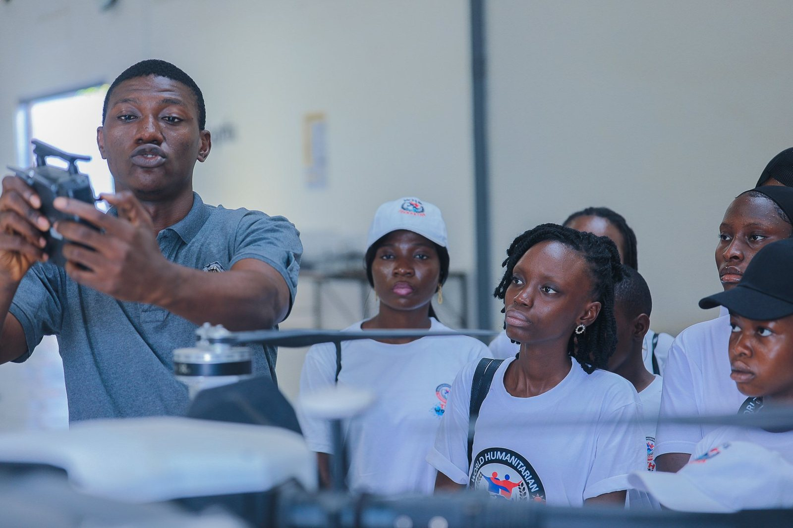

Technology for humanity
Technology for humanity. Opportunity for all.
WHSF equips girls, women, young people and underserved communities with digital skills, AI awareness, STEM education and responsible technology for a more inclusive and sustainable future.
